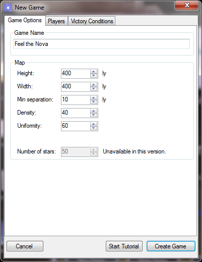
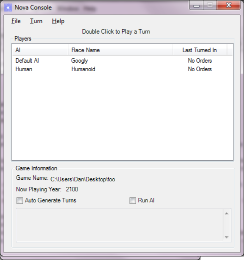
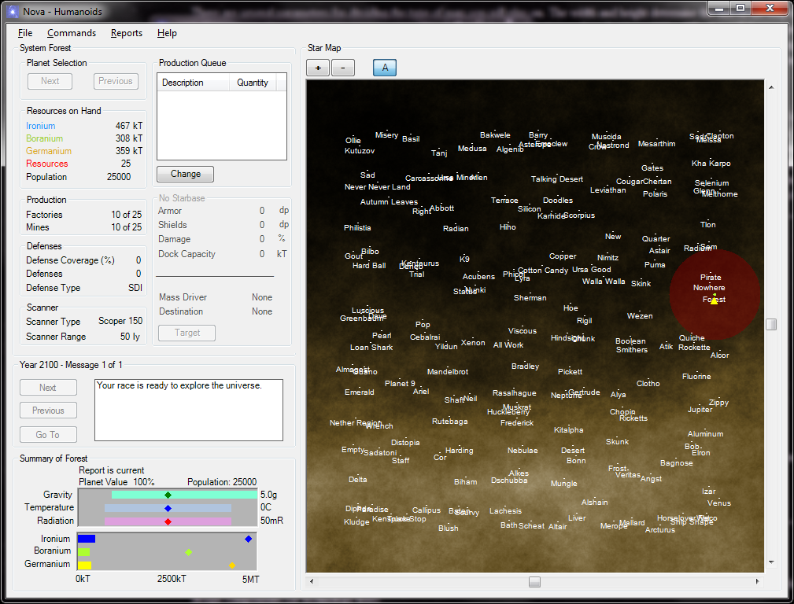
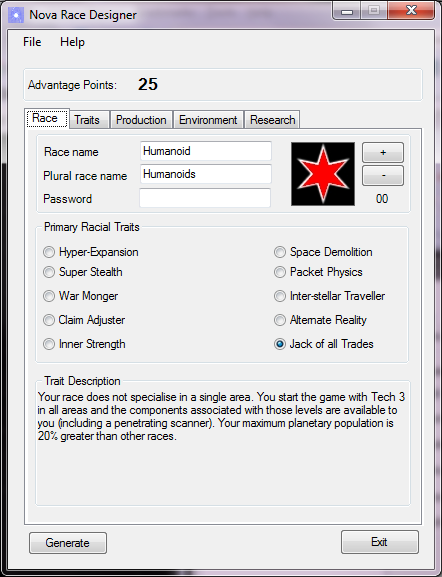
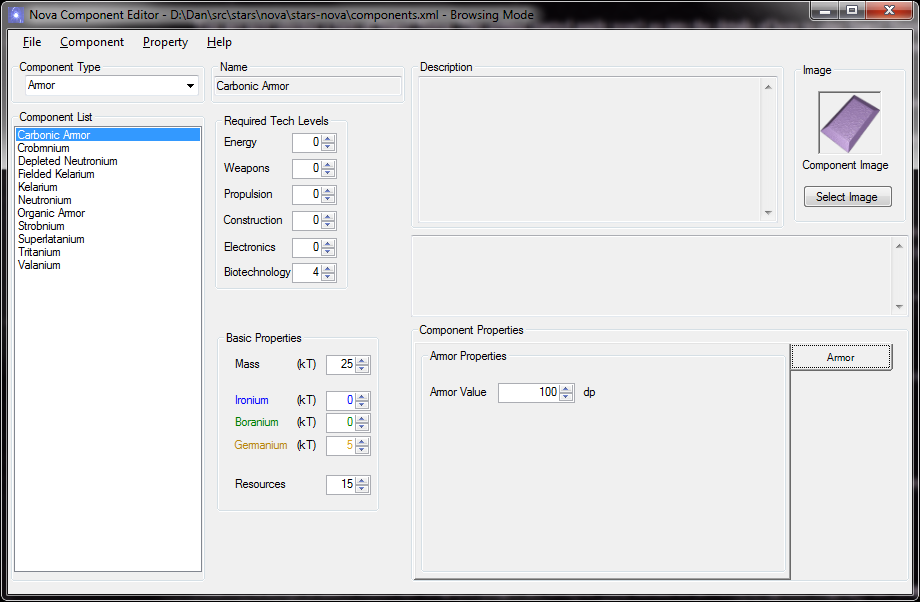

Stars! Nova
Getting Started
Installing the Binaries
The installer is available on SourceForge as a msi file for MS Windows. If you have a previous version of Stars! Nova installed then you should uninstall that version first. Download the installer. Run it by double clicking. Follow the prompts to install Stars! Nova.
Note that this version of Stars! Nova binaries requires that .Net version 3.5 is installed. If you are using Windows Update you will already have received it automatically. If not then the installer should install it automatically. However if that fails for any reason then .Net is a free download from the Microsoft website .
Launching Stars! Nova
Once installed a desktop icon will appear which will launch Stars! Nova. Double click the icon to run Stars! Nova for the first time. A splash screen will appear with buttons along the bottom for creating or loading Stars! Nova games. Press the New Game button to begin a new game.
Note: Stars! Nova currently has a bad habit of minimising its windows and dialogs. If Stars! Nova seems to disappear or stop, check your task bar for a minimised window. We will endeavour to teach it better behaviour in the future...

Stars! Nova - New Game Wizard
The first tab of the New Game Wizard is where you set up the game name and map settings. You can give the game any name you like or leave the default name in. This is the name that will be given to your settings files.
There are several parameters for deciding the type of map you will play on. The width and height determine the size of the map/universe (in light years). The Min Separation is the minimum distance between any two stars. This prevents stars from being so close that it would be difficult to tell them apart. The Density setting controls the total number of stars you will get. The Uniformity setting controls how evenly they will be placed. Low Uniformity leads to stars being clumped together. High Uniformity spreads them out more evenly. Currently it is not possible to directly control the total number of stars that will be produced, as this depends on the other settings.
The default settings are fine for your first game. Select the next tab - Players.
The Players tab allows you to select human and AI players for your game. The list box at the top should start with a number of default players, one for each default race. You won't need all of these for your first game. Select the Test race and then the delete button to rid the universe of the Testies. Change the Googly race to AI controlled by selecting the Googly race in the list box, then, in the modify player group below select the Default AI player from the drop-down. You could add other players or even launch the race designer from here but for now this will do. Go on to the Victory Conditions tab. Check the box marked 'Has the highest score after (years)' and leave the target years at 100. You can now create the game with the Create Game button. A dialog box will open and ask you where you want to save this game. Any location will do but I suggest that you create the game in a new folder to keep all the game files separate. Once you have selected a location the Stars! Nova Console will launch...

Stars! Nova - Console
The Stars! Nova Console controls the running of the game. It monitors the progress of all players and generates new turns when all players are ready. It also launches the AI as required.
To make things easy for us we will let the console decide when to run the AI or generate a turn. Click both the check boxes next to 'Auto Generate Turns' and 'Run AI'.
To play your first turn, double click on your race (Human) in the console to launch the Stars! Nova GUI...

Stars! Nova - GUI
You are now playing a turn of Stars! Nova. This getting started guide won't go into the details of how to play Stars! Nova. For your first turn you should click the Change button under the Production Queue and add some factories to your starting system's production queue. When you are ready to submit your turn, from the main menu select Commands->Save & Submit Turn.
Shortly after you submit your turn the console will detect this and generate a new turn. The console always displays 'Now playing year: NNNN' so you can see what turn it is waiting for. Beside each race is the last turn they submitted so you can tell what races still need to submit turns.
Continue to submit turns until you have conquered the universe!
Note: The level of functionality is currently very basic and it is not expected that you will play Stars! Nova as you would a finished game. This release is intended for testing purposes and to enable non-developers to help us spot bugs and other issues. To provide feedback on your experience of Stars! Nova post your comments in the Stars! Nova General Discussion forum.

Stars! Nova - Race Designer
Note Currently all the default races use the password 'g'. However password protection in game has been temporarily disabled.
You can use the race designer to create your own custom races with their own special abilities. The race designer can be launched either directly (using the shortcut in the windows menu) or from the launcher or new game wizard. It can also be launched from a command line with the --race option. Saved races can be selected for the new game wizard using the Browse button.

Component Editor
You can view or even modify the Stars! Nova technology (components) using the component editor. The component editor can be launched from the windows menu or by running Nova with the --components option from a command line.
Nova uses a file that defines the available design components. By default it's in the top-level folder of the Nova directory and is called components.xml. Select the file and click the Open button to view or modify it.
The components of Stars! Nova can be launched from the command line in the following fassion:
Start Launcher Nova --launch Start New Game wizard Nova --new Start Race Designer Nova --race Start Component Editor Nova --components Start Console Nova --console Start GUI Nova --gui -r-t -i -s Run AI Nova --ai -r -t -i Display the help screen Nova --help
Copyright © Ken Reed, 2008.
Copyright © stars-nova, 2009, 2010.
Last modified Sunday, 23 May 2010